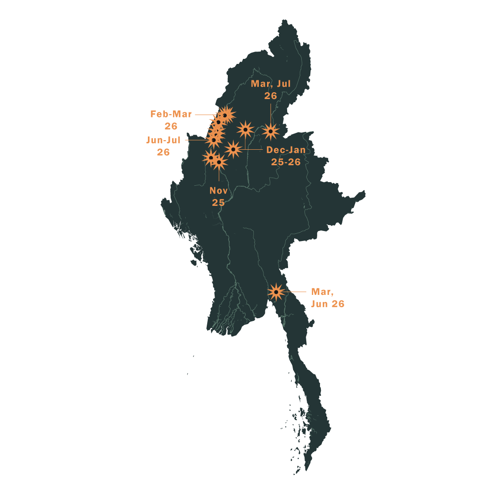
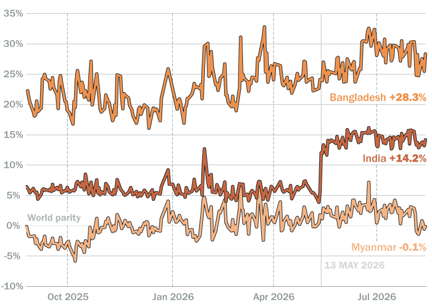

Satellite imagery shows that the boom extends well beyond the Chindwin basin, to areas such as the Meza River and its tributaries in northern Sagaing.
Funding the Grassroots Resistance to Military Rule
Gold mining has long been a lucrative source of income in Myanmar for both the government and non-state armed groups. But since the 2021 coup, worsening conflict, economic collapse and soaring global prices have triggered a new gold rush in parts of central and northern Myanmar. Official figures put Myanmar’s gold production at just 500kg, but informal production is likely to be at least ten times higher – valuing the industry at close to $1 billion a year. The sector also provides jobs for hundreds of thousands of people.
Much of the mining takes place in creeks and rivers, or along their banks and in nearby fields. Homalin, in northern Sagaing Region, was already a hotspot before the coup, with the Shanni Nationalities Army, a pro-regime militia, informally taxing the miners.
The alluvial mining operations here employ tens of thousands of people, mostly migrants from elsewhere in Myanmar. But the mining has also reshaped the landscape – destroying farmland, carving up riverbanks and in some places even changing the course of waterways.
Since the military takeover, miners have pushed south from Homalin along the Chindwin River into areas where the regime has lost control. In some resistance-dominated areas, local administrators and armed groups aligned with the National Unity Government – the parallel administration created by lawmakers ousted by the 2021 coup – have allowed gold dredging boats to operate, from which they collect annual licence fees and monthly taxes.
The miners use boats to suck soil from naturally forming sandbanks and run it through sluices. They then separate the gold using dangerous chemicals, often including mercury, and dump the waste back into the river.
The dredging operations have triggered protests by nearby communities concerned about the impact on their livelihoods. The sandbanks that emerge in the Chindwin River during the dry season are prized for their fertile soil, but once miners churn them up, they can no longer be cultivated.
Resistance groups in the area say taxing gold mines is one of the few ways they can buy weapons and ammunition. But some local leaders are also accused of profiting personally from the industry, including by running dredging boats themselves. Residents also fear the mining will draw military attacks from a regime determined to cut off its opponents’ revenues.

Local regime officials have also benefited, collecting bribes and informal taxes from miners in exchange for not attacking their operations. But after battlefield losses and a shake-up in Sagaing Region’s military command in November 2025, pro-regime social media accounts began calling for airstrikes on mining sites in resistance areas to prevent these armed groups from getting funds. Over the past nine months, local media has reported dozens of airstrikes against gold mining sites spanning at least eight townships.
Satellite imagery shows that the boom extends well beyond the Chindwin basin, into other resistance-dominated parts of Sagaing Region.
Crisis Group analysis found that alluvial mining covered around 7,350 hectares along the Meza River and its tributaries before the 2021 coup.
Mining has since expanded to 19,210 hectares – an increase of more than 160 per cent over the pre-coup footprint.
Further west, the area around Thaphanseik, Myanmar’s largest irrigation dam, is another epicentre of alluvial mining. Before the coup, mining already covered 12,890 hectares.
Alluvial mining now covers almost 29,000 hectares around Thaphanseik, with much of the expansion concentrated in resistance-held areas north of the dam along the Mu River.
Much of this mining has spread from riverbanks into forests and paddy fields – even right up to the edge of houses. Farmers say armed groups pressure them to sell land to miners, leaving communities with polluted water and damaged fields.
 2018
2018
 2023
2023
 2025
2025
Control of areas rich in underground gold seams has also become a military objective for both the regime and its opponents. In Banmauk Township, resistance forces seized the town and nearby mining areas in September 2025 before the military and Shanni Nationalities Army counterattacked. The resistance later abandoned the town, but still oversees many mines in the surrounding area.
Some unlucky rafts will be hit, equipment will be lost and workers will die. But it doesn’t take long for the rafts to restart operations – they take the hits and go back to work”, said one resistance source. “And for the military commanders, it’s all just for show”.
Gold from mining operations is sent by boat, plane or road to refineries in Mandalay, Myanmar’s second-largest city. Local demand is high because of the instability of the kyat, the national currency, capital controls and demand for safe-haven assets. But because gold fetches a higher price in neighbouring India and Bangladesh, traders also smuggle it across Myanmar’s porous borders.
The Price Gap That Makes Smuggling Lucrative
Gold price by country relative to world parity (%)

Gold mining provides jobs in a devastated economy and revenues for armed groups fighting the regime. But it also destroys farmland, pollutes waterways, enriches local powerbrokers and makes nearby communities targets in the war. “I’m not opposed to all mining, particularly if the revenues really support the revolution”, said a Banmauk resident. “But the authorities need to manage the impact on the environment and communities. Now there are no rules – they mine anywhere”.